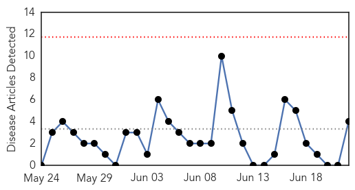
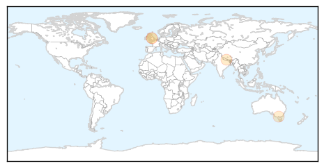
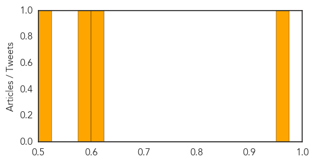
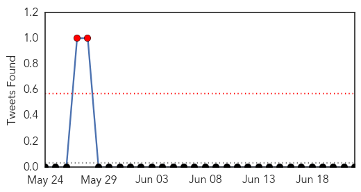

Hepatitis
30-Day Web Trend
0 alerts, 0 warnings

30-Day Twitter Trend
0 alerts, 0 warnings

Article Locations
Article Confidences
Top Articles:
- 0.961
- More than 17,000 people in Greater Manchester infected with hepatitis C
- 0.624
- Experts disagree over necessity of hepatitis E vaccine in Nepal
- 0.576
- Health alert over alleged unregistered dentists running clinics in Melbourne
- 0.507
- Alberta Health Services issues warning after confirmed hepatitis A confirmed at Original Joe's in Strathmore
Top Tweets:
-
No tweets found for Jun 22, 2015
Swine Flu
30-Day Web Trend
1 alerts, 0 warnings

30-Day Twitter Trend
0 alerts, 0 warnings

Article Locations
Article Confidences

Top Articles:
Top Tweets:
-
No tweets found for Jun 22, 2015